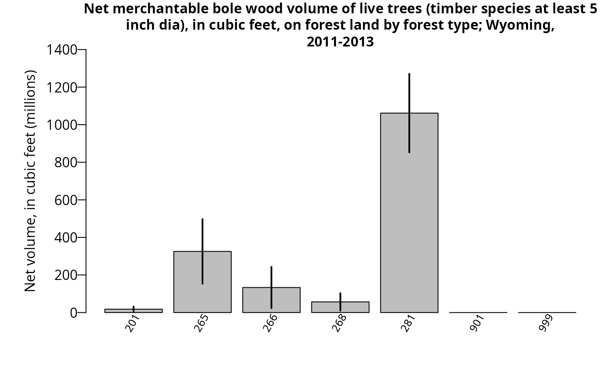

Model-Assisted (MA) module overview
FIESTA’s Model-Assisted (MA) module calculates
population estimates and their sampling errors by taking advantage of
available model-assisted survey estimators from the mase R
package (McConville, et al. 2018). These estimators can use a variety of
auxiliary data to build models and predict over a response variable of
interest, while using a bias-correction term so that the bias of the
model does not depend on model mis-specification.
Functions in FIESTA used for fitting model-assisted
estimators include the modMAarea function for area
estimates and modMAtree for tree estimates. The
modMApop function is used to get population data needed for
model-assisted estimation. Below is a description and table of contents
for the sections related to these functions:
| FUNCTION | DESCRIPTION |
|---|---|
| modMApop | Creates population data for model-assisted estimation. |
| modMAarea | Produces area level estimates through model-assisted estimation. |
| modMAtree | Produces tree level estimates through model-assisted estimation. |
Objective of tutorial
The main objective of this tutorial is to demonstrate how to use
FIESTA for generating estimates using estimators from
mase. The model-assisted estimators can be used with FIA’s
standard state-level population data (i.e, Evaluation) from the FIA
database (FIADB) and also population data from a custom boundary.
The following examples are for generating estimates and estimated
variances using standard FIA Evaluation data from FIA’s National
database, with custom Estimation unit and Stratification information.
The examples use data from three inventory years of field measurements
in the state of Wyoming, from FIADB_1.7.2.00, last updated June 20,
2018, downloaded on June 25, 2018 and stored as internal data objects in
FIESTA.
Example data - Wyoming (WY), Inventory Years 2011-2012
View MA Example Data
| Data Frame | Description |
|---|---|
| WYplt | WY plot-level data |
| WYcond | WY condition-level data |
| WYtree | WY tree-level data |
| External data | Description |
|---|---|
| WYbighorn_adminbnd.shp | Polygon shapefile of WY Bighorn National Forest Administrative boundary* |
| WYbighorn_districtbnd.shp | Polygon shapefile of WY Bighorn National Forest District boundaries** |
| WYbighorn_forest_nonforest_250m.tif | GeoTIFF raster of predicted forest/nonforest (1/0) for stratification*** |
| WYbighorn_dem_250m.img | Erdas Imagine raster of elevation change, in meters**** |
*USDA Forest Service, Automated Lands Program (ALP). 2018. S_USA.AdministrativeForest (http://data.fs.usda.gov/geodata/edw). Description: An area encompassing all the National Forest System lands administered by an administrative unit. The area encompasses private lands, other governmental agency lands, and may contain National Forest System lands within the proclaimed boundaries of another administrative unit. All National Forest System lands fall within one and only one Administrative Forest Area.
**USDA Forest Service, Automated Lands Program (ALP). 2018. S_USA.RangerDistrict (http://data.fs.usda.gov/geodata/edw). Description: A depiction of the boundary that encompasses a Ranger District.
***Based on MODIS-based classified map resampled from 250m to 500m resolution and reclassified from 3 to 2 classes: 1:forest; 2:nonforest. Projected in Albers Conical Equal Area, Datum NAD27 (Ruefenacht et al. 2008). Clipped to extent of WYbighorn_adminbnd.shp.
****USGS National Elevation Dataset (NED), resampled from 30m resolution to 250m. Projected in Albers Conical Equal Area, Datum NAD27 (U.S. Geological Survey 2017). Clipped to boundary of WYbighorn_adminbnd.shp.
Set up
First, you’ll need to load the FIESTA library:
Next, you’ll need to set up an “outfolder”. This is just a file path
to a folder where you’d like FIESTA to send your data
output. For our purposes in this vignette, we have saved our outfolder
file path as the outfolder object in a temporary directory.
We also set a few default options preferred for this vignette.
outfolder <- tempdir()Get data for examples
View Getting Data
Now that we’ve loaded FIESTA and setup our outfolder, we
can retrieve the data needed to run the examples. First, we point to
some external data and predictor layers stored in FIESTA
and derive new predictor layers using the terra
package.
# File names for external spatial data
WYbhfn <- system.file("extdata", "sp_data/WYbighorn_adminbnd.shp",
package = "FIESTA")
WYbhdistfn <- system.file("extdata", "sp_data/WYbighorn_districtbnd.shp",
package = "FIESTA")
## predictor variables
fornffn <- system.file("extdata", "sp_data/WYbighorn_forest_nonforest_250m.tif",
package = "FIESTA")
demfn <- system.file("extdata", "sp_data/WYbighorn_dem_250m.img",
package = "FIESTA")
# Derive new predictor layers from dem
library(terra)
dem <- rast(demfn)
slpfn <- paste0(outfolder, "/WYbh_slp.img")
slp <- terra::terrain(dem,
v = "slope",
unit = "degrees",
filename = slpfn,
overwrite = TRUE,
NAflag = -99999.0)
aspfn <- paste0(outfolder, "/WYbh_asp.img")
asp <- terra::terrain(dem,
v = "aspect",
unit = "degrees",
filename = aspfn,
overwrite = TRUE,
NAflag = -99999.0)Next, we can get our FIA plot data and set up our auxiliary data. We
can get our FIA plot data with the spMakeSpatialPoints
function from FIESTA. For more information on how to use
this function, please see the sp vignette included with
FIESTA (link).
WYspplt <- spMakeSpatialPoints(
xyplt = WYplt,
xy.uniqueid = "CN",
xvar = "LON_PUBLIC",
yvar = "LAT_PUBLIC",
xy.crs = 4269
)
rastlst.cont <- c(demfn, slpfn, aspfn)
rastlst.cont.name <- c("dem", "slp", "asp")
rastlst.cat <- fornffn
rastlst.cat.name <- "fornf"Next, we must generate dataset for model-assisted estimation. We can
do this with the spGetAuxiliary function from
FIESTA. Again, see the sp vignette for further
information on this function.
modeldat <- spGetAuxiliary(
xyplt = WYspplt,
uniqueid = "CN",
unit_layer = WYbhfn,
unitvar = NULL,
rastlst.cont = rastlst.cont,
rastlst.cont.name = rastlst.cont.name,
rastlst.cat = rastlst.cat,
rastlst.cat.name = rastlst.cat.name,
rastlst.cont.stat = "mean",
asptransform = TRUE,
rast.asp = aspfn,
keepNA = FALSE,
showext = FALSE,
savedata = FALSE)
str(modeldat, max.level = 1)output
## List of 12
## $ unitvar : chr "ONEUNIT"
## $ pltassgn :'data.frame': 56 obs. of 25 variables:
## $ pltassgnid : chr "CN"
## $ unitarea :'data.frame': 1 obs. of 2 variables:
## $ areavar : chr "ACRES_GIS"
## $ unitzonal :'data.frame': 1 obs. of 8 variables:
## $ inputdf :Classes 'data.table' and 'data.frame': 4 obs. of 7 variables:
## ..- attr(*, ".internal.selfref")=<externalptr>
## $ prednames : chr [1:5] "dem" "slp" "asp_cos" "asp_sin" ...
## $ zonalnames : chr [1:7] "dem" "slp" "asp_cos" "asp_sin" ...
## $ predfac : chr "fornf"
## $ npixelvar : chr "npixels"
## $ predfac.levels:List of 1Examples
modMApop
Example 1: Creating our population dataset with
modMApop
View Example
We can create our population data for model-assisted estimation. To
do so, we use the modMApop function in FIESTA.
We must assign our population tables with the popTabs
argument (and unique identifiers for these tables with the
popTabIDs argument if they are not the default), the plot
assignment with the pltassgn argument, and in auxiliary
dataset we just created with the auxdat argument. The
spGetAuxiliary function has done much of the hard work for
us so far, so we can just run a simple call to
modMApop:
Note that the modMApop function returns a list with lots
of information and data for us to use. For a quick look at what this
list includes we can use the str function:
str(MApopdat, max.level = 1)output
## List of 26
## $ module : chr "MA"
## $ popType : chr "VOL"
## $ condx :Classes 'data.table' and 'data.frame': 66 obs. of 17 variables:
## ..- attr(*, "sorted")= chr [1:2] "PLT_CN" "CONDID"
## ..- attr(*, ".internal.selfref")=<externalptr>
## $ pltcondx :Classes 'data.table' and 'data.frame': 66 obs. of 30 variables:
## ..- attr(*, ".internal.selfref")=<externalptr>
## ..- attr(*, "sorted")= chr "DSTRBCD1"
## $ cuniqueid : chr "PLT_CN"
## $ condid : chr "CONDID"
## $ ACI.filter : chr "COND_STATUS_CD == 1"
## $ unitarea :Classes 'data.table' and 'data.frame': 1 obs. of 2 variables:
## ..- attr(*, ".internal.selfref")=<externalptr>
## ..- attr(*, "sorted")= chr "ONEUNIT"
## $ areavar : chr "ACRES_GIS"
## $ areaunits : chr "acres"
## $ unitvar : chr "ONEUNIT"
## $ unitvars : chr "ONEUNIT"
## $ unitlut :Classes 'data.table' and 'data.frame': 1 obs. of 7 variables:
## ..- attr(*, ".internal.selfref")=<externalptr>
## ..- attr(*, "sorted")= chr "ONEUNIT"
## $ plotsampcnt:'data.frame': 2 obs. of 3 variables:
## $ condsampcnt:'data.frame': 4 obs. of 3 variables:
## $ npixels :Classes 'data.table' and 'data.frame': 1 obs. of 2 variables:
## ..- attr(*, ".internal.selfref")=<externalptr>
## $ npixelvar : chr "npixels"
## $ states : chr "Wyoming"
## $ invyrs :List of 1
## $ estvar.area: chr "CONDPROP_ADJ"
## $ adj : chr "plot"
## $ treex :Classes 'data.table' and 'data.frame': 1691 obs. of 21 variables:
## ..- attr(*, ".internal.selfref")=<externalptr>
## ..- attr(*, "sorted")= chr [1:2] "PLT_CN" "CONDID"
## $ tuniqueid : chr "PLT_CN"
## $ adjtree : logi FALSE
## $ prednames : chr [1:5] "dem" "slp" "asp_cos" "asp_sin" ...
## $ predfac : chr "fornf"Now that we’ve created our population dataset, we can move on to estimation.
modMAarea
Example 2: Area of forest land, Wyoming, 2011-2013
View Example
In this example, we look at estimating the area of forest land in
Wyoming from 2011 to 2013 summed to the population unit
(sumunit = TRUE) with the generalized regression estimator
(MAmethod = "greg"). FIESTA returns raw data
for area of forest land, Wyoming, 2011-2013 (sum estimation units).
area1 <- modMAarea(
MApopdat = MApopdat, # pop - population calculations for WY, post-stratification
MAmethod = "greg", # est - model-assisted method
landarea = "FOREST" # est - forest land filter
)We can look at the structure of this output with str and
the estimates below. Note that again FIESTA outputs a
list.
str(area1, max.level = 2)output
## List of 4
## $ est :Classes 'data.table' and 'data.frame': 1 obs. of 3 variables:
## ..$ ONEUNIT : chr "1"
## ..$ Estimate : num 652879
## ..$ Percent Sampling Error: num 9.5
## ..- attr(*, ".internal.selfref")=<externalptr>
## ..- attr(*, "sorted")= chr "ONEUNIT"
## $ raw :List of 9
## ..$ unit_totest :'data.frame': 1 obs. of 18 variables:
## ..$ domdat :'data.frame': 66 obs. of 20 variables:
## ..$ module : chr "MA"
## ..$ esttype : chr "AREA"
## ..$ MAmethod : chr "greg"
## ..$ predselectlst:List of 1
## ..$ rowvar : chr "TOTAL"
## ..$ colvar : chr "NONE"
## ..$ areaunits : chr "acres"
## $ statecd: int 56
## $ invyr : int [1:3] 2011 2012 2013
area1$estoutput
## Key: <ONEUNIT>
## ONEUNIT Estimate Percent Sampling Error
## <char> <num> <num>
## 1: 1 652879.1 9.5Example 3: Area of forest land, Wyoming, 2011-2013, using the Elastic Net for variable selection
View Example
Here, we fit the same model as the above example, but rather than
using "greg" are our model-assisted method, we can use
"gregEN" where the EN stands for “elastic net”. The elastic
net performs variable selection for us, grabbing predictors it finds to
be most useful in the model.
area2 <- modMAarea(
MApopdat = MApopdat, # pop - population calculations for WY, post-stratification
MAmethod = "gregEN", # est - model-assisted method
landarea = "FOREST", # est - forest land filter
)We can again see that the structure of the list is very similar to that in the above example:
str(area2, max.level = 2)output
## List of 4
## $ est :Classes 'data.table' and 'data.frame': 1 obs. of 3 variables:
## ..$ ONEUNIT : chr "1"
## ..$ Estimate : num 667495
## ..$ Percent Sampling Error: num 9.54
## ..- attr(*, ".internal.selfref")=<externalptr>
## ..- attr(*, "sorted")= chr "ONEUNIT"
## $ raw :List of 9
## ..$ unit_totest :'data.frame': 1 obs. of 18 variables:
## ..$ domdat :'data.frame': 66 obs. of 20 variables:
## ..$ module : chr "MA"
## ..$ esttype : chr "AREA"
## ..$ MAmethod : chr "gregEN"
## ..$ predselectlst:List of 1
## ..$ rowvar : chr "TOTAL"
## ..$ colvar : chr "NONE"
## ..$ areaunits : chr "acres"
## $ statecd: int 56
## $ invyr : int [1:3] 2011 2012 2013However now the raw list has an item call
predselectlst. We can look at this item now:
area2$raw$predselectlst$totestoutput
## ONEUNIT TOTAL dem slp asp_cos asp_sin fornf2
## <fctr> <num> <num> <num> <num> <num> <num>
## 1: 1 1 -0.0002003131 0.006865144 0 0 -0.2316885Notably, we can see that dem, slp,
asp_cos, and asp_sin were removed from the
model.
Example 4: Area by forest type on forest land, Wyoming, 2011-2013
View Example
In this example, we look at adding rows to the output and include returntitle=TRUE to return title information.
area3 <- modMAarea(
MApopdat = MApopdat, # pop - population calculations for WY, post-stratification
MAmethod = "greg", # est - model-assisted method
landarea = "FOREST", # est - forest land filter
rowvar = "FORTYPCD", # est - row domain
returntitle = TRUE # out - return title information
)Again, we can look at the contents of the output list. The output now includes titlelst, a list of associated titles.
str(area3, max.level = 1)output
## List of 5
## $ est :'data.frame': 8 obs. of 3 variables:
## $ titlelst:List of 9
## $ raw :List of 10
## $ statecd : int 56
## $ invyr : int [1:3] 2011 2012 2013And the estimates:
## Estimate and percent sampling error of estimate
area3$estoutput
## Forest type Estimate Percent Sampling Error
## 1 201 44286.4 85.2
## 2 265 89101.3 52.03
## 3 266 97017.3 42.4
## 4 268 112697.6 34.19
## 5 281 618425.6 13.59
## 6 901 38648.7 75.39
## 7 999 36765 64.92
## 8 Total 652879.1 9.5Along with raw data and titles:
## Raw data (list object) for estimate
raw3 <- area3$raw # extract raw data list object from output
names(raw3)output
## [1] "unit_totest" "unit_rowest" "domdat" "module"
## [5] "esttype" "MAmethod" "predselectlst" "rowvar"
## [9] "colvar" "areaunits"
head(raw3$unit_totest) # estimates by estimation unit (i.e., ESTN_UNIT)output
## ONEUNIT nhat nhat.var NBRPLT NBRPLT.gt0 ACRES_GIS AREAUSED est
## 1 1 0.5869038 0.003106112 56 37 1112412 1112412 652879.1
## est.var est.se est.cv pse CI99left CI99right CI95left CI95right
## 1 3843693079 61997.52 0.0949602 9.49602 493184 812574.1 531366.2 774392
## CI68left CI68right
## 1 591225.1 714533
raw3$totest # estimates for population (i.e., WY)output
## NULL
head(raw3$unit_rowest) # estimates by row, by estimation unit (i.e., ESTN_UNIT)output
## ONEUNIT Forest type nhat nhat.var NBRPLT NBRPLT.gt0 ACRES_GIS
## 1 1 201 0.03981113 0.0011505987 37 2 1112412
## 2 1 265 0.08009738 0.0017367503 37 4 1112412
## 3 1 266 0.08721348 0.0013673266 37 5 1112412
## 4 1 268 0.10130923 0.0012000844 37 3 1112412
## 5 1 281 0.55593198 0.0057107487 37 23 1112412
## 6 1 901 0.03474316 0.0006861348 37 1 1112412
## AREAUSED est est.var est.se est.cv pse CI99left CI99right
## 1 1112412 44286.39 1423821285 37733.56 0.8520351 85.20351 0.00 141481.6
## 2 1112412 89101.31 2149161132 46359.05 0.5202959 52.02959 0.00 208514.3
## 3 1112412 97017.35 1692013618 41134.09 0.4239870 42.39870 0.00 202971.7
## 4 1112412 112697.64 1485057928 38536.45 0.3419455 34.19455 13434.33 211961.0
## 5 1112412 618425.60 7066830141 84064.44 0.1359330 13.59330 401889.95 834961.3
## 6 1112412 38648.72 849065242 29138.72 0.7539376 75.39376 0.00 113705.1
## CI95left CI95right CI68left CI68right
## 1 0.00 118242.80 6761.956 81810.82
## 2 0.00 179963.37 42999.193 135203.43
## 3 16396.01 177638.69 56111.224 137923.47
## 4 37167.59 188227.70 74374.767 151020.52
## 5 453662.33 783188.88 534827.056 702024.15
## 6 0.00 95759.57 9671.489 67625.96
head(raw3$rowest) # estimates by row for population (i.e., WY)output
## NULL
## Titles (list object) for estimate
titlelst3 <- area3$titlelst
names(titlelst3)output
## [1] "title.estpse" "title.unitvar" "title.ref" "outfn.estpse"
## [5] "outfn.rawdat" "outfn.param" "title.rowvar" "title.row"
## [9] "title.unitsn"
titlelst3output
## $title.estpse
## [1] "Area, in acres, and percent sampling error on forest land by forest type"
##
## $title.unitvar
## [1] "ONEUNIT"
##
## $title.ref
## [1] "Wyoming, 2011-2013"
##
## $outfn.estpse
## [1] "area_FORTYPCD_forestland"
##
## $outfn.rawdat
## [1] "area_FORTYPCD_forestland_rawdata"
##
## $outfn.param
## [1] "area_FORTYPCD_forestland_parameters"
##
## $title.rowvar
## [1] "Forest type"
##
## $title.row
## [1] "Area, in acres, on forest land by forest type; Wyoming, 2011-2013"
##
## $title.unitsn
## [1] "acres"Example 5: Area by forest type and stand-size class on forest land, Wyoming, 2011-2013
View Example
In this example, we look at adding rows and columns to output,
including FIA names. We also output estimates and percent standard error
in the same cell with the allin1 argument in
table_options and save data to an outfolder with the
outfolder argument in savedata_options.
## Area of forest land by forest type and stand-size class, Wyoming, 2011-2013
area4 <- modMAarea(
MApopdat = MApopdat, # pop - population calculations for WY, post-stratification
MAmethod = "greg", # est - model-assisted method
landarea = "FOREST", # est - forest land filter
rowvar = "FORTYPCD", # est - row domain
colvar = "STDSZCD", # est - column domain
savedata = TRUE, # out - save data to outfolder
returntitle = TRUE, # out - return title information
table_opts = list(
row.FIAname = TRUE, # table - row domain names
col.FIAname = TRUE, # table - column domain names
allin1 = TRUE # table - return output with est(pse)
),
savedata_opts = list(
outfolder = outfolder, # save - outfolder for saving data
outfn.pre = "WY" # save - prefix for output files
)
)
area4$estoutput
## Forest type Large diameter Medium diameter
## <char> <char> <char>
## 1: Douglas-fir 28,381.5 ( 95.01) -- ( --)
## 2: Engelmann spruce 97,387.6 ( 40.28) -8,286.3 (-339.39)
## 3: Engelmann spruce / subalpine fir 42,290.6 ( 91.23) 28,627.2 ( 48.64)
## 4: Subalpine fir 36,053.1 ( 81.54) -- ( --)
## 5: Lodgepole pine 221,069.2 ( 28.62) 289,086.8 ( 20.06)
## 6: Aspen -- ( --) -- ( --)
## 7: Nonstocked -- ( --) -- ( --)
## 8: Total 425,182.1 ( 15.23) 309,427.6 ( 19.74)
## Small diameter Nonstocked Total
## <char> <char> <char>
## 1: 15,904.9 ( 179.36) -- ( --) 44,286.4 ( 85.20)
## 2: -- ( --) -- ( --) 89,101.3 ( 52.03)
## 3: 26,099.5 ( 65.28) -- ( --) 97,017.3 ( 42.40)
## 4: 76,644.6 ( 33.27) -- ( --) 112,697.6 ( 34.19)
## 5: 108,269.6 ( 35.83) -- ( --) 618,425.6 ( 13.59)
## 6: 38,648.7 ( 75.39) -- ( --) 38,648.7 ( 75.39)
## 7: -- ( --) 36,765.0 ( 64.92) 36,765.0 ( 64.92)
## 8: 265,567.3 ( 20.58) 36,765.0 ( 64.92) 652,879.1 ( 9.50)We can again look at the output list, estimates, raw data, and titles:
## Look at output list
names(area4)output
## [1] "est" "pse" "titlelst" "raw" "statecd" "invyr"
## Estimate and percent sampling error of estimate
head(area4$est)output
## Forest type Large diameter Medium diameter
## <char> <char> <char>
## 1: Douglas-fir 28,381.5 ( 95.01) -- ( --)
## 2: Engelmann spruce 97,387.6 ( 40.28) -8,286.3 (-339.39)
## 3: Engelmann spruce / subalpine fir 42,290.6 ( 91.23) 28,627.2 ( 48.64)
## 4: Subalpine fir 36,053.1 ( 81.54) -- ( --)
## 5: Lodgepole pine 221,069.2 ( 28.62) 289,086.8 ( 20.06)
## 6: Aspen -- ( --) -- ( --)
## Small diameter Nonstocked Total
## <char> <char> <char>
## 1: 15,904.9 ( 179.36) -- ( --) 44,286.4 ( 85.20)
## 2: -- ( --) -- ( --) 89,101.3 ( 52.03)
## 3: 26,099.5 ( 65.28) -- ( --) 97,017.3 ( 42.40)
## 4: 76,644.6 ( 33.27) -- ( --) 112,697.6 ( 34.19)
## 5: 108,269.6 ( 35.83) -- ( --) 618,425.6 ( 13.59)
## 6: 38,648.7 ( 75.39) -- ( --) 38,648.7 ( 75.39)
## Raw data (list object) for estimate
raw4 <- area4$raw # extract raw data list object from output
names(raw4)output
## [1] "unit_totest" "unit_rowest" "unit_colest" "unit_grpest"
## [5] "domdat" "module" "esttype" "MAmethod"
## [9] "predselectlst" "rowvar" "colvar" "areaunits"
head(raw4$unit_totest) # estimates by estimation unit (i.e., ESTN_UNIT)output
## ONEUNIT nhat nhat.var NBRPLT NBRPLT.gt0 ACRES_GIS AREAUSED est
## 1 1 0.5869038 0.003106112 56 37 1112412 1112412 652879.1
## est.var est.se est.cv pse CI99left CI99right CI95left CI95right
## 1 3843693079 61997.52 0.0949602 9.49602 493184 812574.1 531366.2 774392
## CI68left CI68right
## 1 591225.1 714533
head(raw4$totest) # estimates for population (i.e., WY)output
## NULL
head(raw4$unit_rowest) # estimates by row, by estimation unit (i.e., ESTN_UNIT)output
## ONEUNIT FORTYPCD nhat nhat.var NBRPLT NBRPLT.gt0
## 1 1 201 0.03981113 0.0011505987 37 2
## 2 1 265 0.08009738 0.0017367503 37 4
## 3 1 266 0.08721348 0.0013673266 37 5
## 4 1 268 0.10130923 0.0012000844 37 3
## 5 1 281 0.55593198 0.0057107487 37 23
## 6 1 901 0.03474316 0.0006861348 37 1
## Forest type ACRES_GIS AREAUSED est est.var
## 1 Douglas-fir 1112412 1112412 44286.39 1423821285
## 2 Engelmann spruce 1112412 1112412 89101.31 2149161132
## 3 Engelmann spruce / subalpine fir 1112412 1112412 97017.35 1692013618
## 4 Subalpine fir 1112412 1112412 112697.64 1485057928
## 5 Lodgepole pine 1112412 1112412 618425.60 7066830141
## 6 Aspen 1112412 1112412 38648.72 849065242
## est.se est.cv pse CI99left CI99right CI95left CI95right
## 1 37733.56 0.8520351 85.20351 0.00 141481.6 0.00 118242.80
## 2 46359.05 0.5202959 52.02959 0.00 208514.3 0.00 179963.37
## 3 41134.09 0.4239870 42.39870 0.00 202971.7 16396.01 177638.69
## 4 38536.45 0.3419455 34.19455 13434.33 211961.0 37167.59 188227.70
## 5 84064.44 0.1359330 13.59330 401889.95 834961.3 453662.33 783188.88
## 6 29138.72 0.7539376 75.39376 0.00 113705.1 0.00 95759.57
## CI68left CI68right
## 1 6761.956 81810.82
## 2 42999.193 135203.43
## 3 56111.224 137923.47
## 4 74374.767 151020.52
## 5 534827.056 702024.15
## 6 9671.489 67625.96
head(raw4$rowest) # estimates by row for population (i.e., WY)output
## NULL
head(raw4$unit_colest) # estimates by column, by estimation unit (i.e., ESTN_UNIT)output
## ONEUNIT STDSZCD nhat nhat.var NBRPLT NBRPLT.gt0 Stand-size class
## 1 1 1 0.38221627 0.0033901272 37 18 Large diameter
## 2 1 2 0.27815912 0.0030155927 37 14 Medium diameter
## 3 1 3 0.23873097 0.0024143561 37 6 Small diameter
## 4 1 5 0.03304982 0.0004603932 37 1 Nonstocked
## ACRES_GIS AREAUSED est est.var est.se est.cv pse CI99left
## 1 1112412 1112412 425182.10 4195150958 64769.99 0.1523347 15.23347 258345.7
## 2 1112412 1112412 309427.64 3731679124 61087.47 0.1974209 19.74209 152076.7
## 3 1112412 1112412 265567.28 2987672110 54659.60 0.2058220 20.58220 124773.5
## 4 1112412 1112412 36765.03 569718693 23868.78 0.6492251 64.92251 0.0
## CI99right CI95left CI95right CI68left CI68right
## 1 592018.52 298235.3 552128.93 360771.07 489593.12
## 2 466778.53 189698.4 429156.88 248678.72 370176.55
## 3 406361.09 158436.4 372698.13 211210.61 319923.96
## 4 98246.94 0.0 83546.98 13028.53 60501.53
head(raw4$colest) # estimates by column for population (i.e., WY)output
## NULL
head(raw4$unit_grpest) # estimates by row and column, by estimation unit (i.e., ESTN_UNIT)output
## ONEUNIT grpvar nhat nhat.var NBRPLT NBRPLT.gt0 FORTYPCD STDSZCD
## 1 1 201#1 0.025513469 0.0005875578 37 1 201 1
## 2 1 201#3 0.014297657 0.0006576539 37 1 201 3
## 3 1 265#1 0.087546327 0.0012436962 37 3 265 1
## 4 1 265#2 -0.007448949 0.0006391340 37 1 265 2
## 5 1 266#1 0.038017056 0.0012029502 37 3 266 1
## 6 1 266#2 0.025734305 0.0001566975 37 1 266 2
## Stand-size class Forest type ACRES_GIS AREAUSED
## 1 Large diameter Douglas-fir 1112412 1112412
## 2 Small diameter Douglas-fir 1112412 1112412
## 3 Large diameter Engelmann spruce 1112412 1112412
## 4 Medium diameter Engelmann spruce 1112412 1112412
## 5 Large diameter Engelmann spruce / subalpine fir 1112412 1112412
## 6 Medium diameter Engelmann spruce / subalpine fir 1112412 1112412
## est est.var est.se est.cv pse CI99left CI99right
## 1 28381.499 727079950 26964.42 0.9500703 95.00703 0 97837.24
## 2 15904.890 813821229 28527.55 1.7936340 179.36340 0 89386.99
## 3 97387.615 1539025822 39230.42 0.4028276 40.28276 0 198438.48
## 4 -8286.303 790903534 28123.01 -3.3939149 -339.39149 0 64153.76
## 5 42290.643 1488604221 38582.43 0.9123161 91.23161 0 141672.41
## 6 28627.159 193907140 13925.05 0.4864281 48.64281 0 64495.72
## CI95left CI95right CI68left CI68right
## 1 0.000 81230.79 1566.518 55196.48
## 2 0.000 71817.86 0.000 44274.34
## 3 20497.406 174277.82 58374.615 136400.62
## 4 0.000 46833.78 0.000 19680.84
## 5 0.000 117910.82 3922.037 80659.25
## 6 1334.554 55919.76 14779.279 42475.04
head(raw4$grpest) # estimates by row and column for population (i.e., WY)output
## NULL
## Titles (list object) for estimate
titlelst4 <- area4$titlelst
names(titlelst4)output
## [1] "title.estpse" "title.unitvar" "title.ref" "outfn.estpse"
## [5] "outfn.rawdat" "outfn.param" "title.rowvar" "title.row"
## [9] "title.colvar" "title.col" "title.unitsn"
titlelst4output
## $title.estpse
## [1] "Area, in acres (percent sampling error), by forest type and stand-size class on forest land"
##
## $title.unitvar
## [1] "ONEUNIT"
##
## $title.ref
## [1] "Wyoming, 2011-2013"
##
## $outfn.estpse
## [1] "WY_area_FORTYPCD_STDSZCD_forestland"
##
## $outfn.rawdat
## [1] "WY_area_FORTYPCD_STDSZCD_forestland_rawdata"
##
## $outfn.param
## [1] "WY_area_FORTYPCD_STDSZCD_forestland_parameters"
##
## $title.rowvar
## [1] "Forest type"
##
## $title.row
## [1] "Area, in acres (percent sampling error), by forest type on forest land; Wyoming, 2011-2013"
##
## $title.colvar
## [1] "Stand-size class"
##
## $title.col
## [1] "Area, in acres (percent sampling error), by stand-size class on forest land; Wyoming, 2011-2013"
##
## $title.unitsn
## [1] "acres"
## List output files in outfolder
list.files(outfolder, pattern = "WY_area")output
## [1] "WY_area_FORTYPCD_STDSZCD_forestland_modMA_mase_greg.csv"
list.files(paste0(outfolder, "/rawdata"), pattern = "WY_area")output
## [1] "WY_area_FORTYPCD_STDSZCD_forestland_rawdata_modMA_mase_greg_domdat.csv"
## [2] "WY_area_FORTYPCD_STDSZCD_forestland_rawdata_modMA_mase_greg_unit_colest.csv"
## [3] "WY_area_FORTYPCD_STDSZCD_forestland_rawdata_modMA_mase_greg_unit_grpest.csv"
## [4] "WY_area_FORTYPCD_STDSZCD_forestland_rawdata_modMA_mase_greg_unit_rowest.csv"
## [5] "WY_area_FORTYPCD_STDSZCD_forestland_rawdata_modMA_mase_greg_unit_totest.csv"
modMAtree
We will set our estimate variable and filter now. We set
estvar to "VOLCFNET" for net cubic foot
volume, and filter with estvar.filter set to
"STATUSCD == 1" so we only consider live trees in our
estimation.
estvar <- "VOLCFNET"
live_trees <- "STATUSCD == 1"Example 6: Net cubic-foot volume of live trees, Wyoming, 2011-2013
View Example
We now will generate estimates by estimation unit (i.e., ESTN_UNIT)
and sum to population (i.e., WY) with modMAtree.
## Return raw data and titles
## Total net cubic-foot volume of live trees (at least 5 inches diameter), Wyoming, 2011-2013
tree1 <- modMAtree(
MApopdat = MApopdat, # pop - population calculations
MAmethod = "greg", # est - model-assisted method
landarea = "FOREST", # est - forest land filter
estvar = estvar, # est - net cubic-foot volume
estvar.filter = live_trees, # est - live trees only
returntitle = TRUE # out - return title information
)
names(tree1)output
## [1] "est" "titlelst" "raw" "statecd" "invyr"
tree1$raw$unit_totestoutput
## ONEUNIT nhat nhat.var NBRPLT NBRPLT.gt0 ACRES_GIS AREAUSED est
## 1 1 1029.962 22849.33 56 34 1112412 1112412 1145742756
## est.var est.se est.cv pse CI99left CI99right CI95left
## 1 2.827516e+16 168152198 0.1467626 14.67626 712611397 1578874115 816170504
## CI95right CI68left CI68right
## 1 1475315008 978522477 1312963035Example 7: Net cubic-foot volume of live trees, Wyoming, 2011-2013, using the Elastic Net for variable selection
View Example
Here, we fit the same model as the above example, but rather than
using "greg" are our model-assisted method, we can use
"gregEN" where the EN stands for “elastic net”. The elastic
net performs variable selection for us, grabbing predictors it finds to
be most useful in the model.
## Return raw data and titles
## Total net cubic-foot volume of live trees (at least 5 inches diameter), Wyoming, 2011-2013
tree2 <- modMAtree(
MApopdat = MApopdat, # pop - population calculations
MAmethod = "gregEN", # est - model-assisted method
landarea = "FOREST", # est - forest land filter
estvar = estvar, # est - net cubic-foot volume
estvar.filter = live_trees, # est - live trees only
returntitle = TRUE # out - return title information
)We can again see that the structure of the list is very similar to that in the above example:
str(tree2, max.level = 2)output
## List of 5
## $ est :Classes 'data.table' and 'data.frame': 1 obs. of 3 variables:
## ..$ ONEUNIT : chr "1"
## ..$ Estimate : num 1.17e+09
## ..$ Percent Sampling Error: num 14.4
## ..- attr(*, ".internal.selfref")=<externalptr>
## ..- attr(*, "sorted")= chr "ONEUNIT"
## $ titlelst:List of 10
## ..$ title.estpse : chr "Net merchantable bole wood volume of live trees (timber species at least 5 inch dia), in cubic feet, and perce"| __truncated__
## ..$ title.yvar : chr "Net volume, in cubic feet"
## ..$ title.estvar : chr "Net merchantable bole wood volume of live trees (timber species at least 5 inch dia)"
## ..$ title.unitvar: chr "ONEUNIT"
## ..$ title.ref : chr "Wyoming, 2011-2013"
## ..$ outfn.estpse : chr "tree_VOLCFNET_forestland"
## ..$ outfn.rawdat : chr "tree_VOLCFNET_forestland_rawdata"
## ..$ outfn.param : chr "tree_VOLCFNET_forestland_parameters"
## ..$ title.tot : chr "Net merchantable bole wood volume of live trees (timber species at least 5 inch dia), in cubic feet, on forest"| __truncated__
## ..$ title.unitsn : chr "cubic feet"
## $ raw :List of 13
## ..$ unit_totest :'data.frame': 1 obs. of 18 variables:
## ..$ domdat :'data.frame': 66 obs. of 20 variables:
## ..$ plotweights :List of 1
## ..$ estvar : chr "VOLCFNET"
## ..$ estvar.filter: chr "STATUSCD == 1"
## ..$ module : chr "MA"
## ..$ esttype : chr "TREE"
## ..$ MAmethod : chr "gregEN"
## ..$ predselectlst:List of 1
## ..$ rowvar : chr "TOTAL"
## ..$ colvar : chr "NONE"
## ..$ areaunits : chr "acres"
## ..$ estunits : Factor w/ 1 level "1": 1
## $ statecd : int 56
## $ invyr : int [1:3] 2011 2012 2013However now the raw list has an item call
predselectlst. We can look at this item now:
tree2$raw$predselectlstoutput
## $totest
## ONEUNIT TOTAL dem slp asp_cos asp_sin fornf2
## <fctr> <num> <num> <num> <num> <num> <num>
## 1: 1 1 0.5235516 -60.26874 0 -497.2782 -1106.439Notably, we can see that [INSERT CORRECT PREDS] dem,
slp, asp_cos, and asp_sin were
removed from the model.
Example 8: Net cubic-foot volume of live trees by forest type, Wyoming, 2011-2013
View Example
This example adds rows to the output for net cubic-foot volume of
live trees (at least 5 inches diameter) by forest type, Wyoming,
2011-2013. We also choose to return titles with
returntitle = TRUE.
tree3 <- modMAtree(
MApopdat = MApopdat, # pop - population calculations
MAmethod = "greg", # est - model-assisted method
landarea = "FOREST", # est - forest land filter
estvar = "VOLCFNET", # est - net cubic-foot volume
estvar.filter = "STATUSCD == 1", # est - live trees only
rowvar = "FORTYPCD", # est - row domain
returntitle = TRUE # out - return title information
)Again, we investigate the output of the returned list:
## Look at output list
names(tree3)output
## [1] "est" "titlelst" "raw" "statecd" "invyr"
## Estimate and percent sampling error of estimate
tree3$estoutput
## Forest type Estimate Percent Sampling Error
## 1 201 17386950.9 82.45
## 2 265 308069606.4 55.88
## 3 266 124752652.1 87.24
## 4 268 56756979.9 82.14
## 5 281 1095829416.3 19.18
## 6 901 -- --
## 7 999 -- --
## 8 NA -- --
## 9 Total 1145742756.1 14.68
## Raw data (list object) for estimate
raw3 <- tree3$raw # extract raw data list object from output
names(raw3)output
## [1] "unit_totest" "unit_rowest" "domdat" "plotweights"
## [5] "estvar" "estvar.filter" "module" "esttype"
## [9] "MAmethod" "predselectlst" "rowvar" "colvar"
## [13] "areaunits" "estunits"
head(raw3$unit_totest) # estimates by estimation unit (i.e., ESTN_UNIT)output
## ONEUNIT nhat nhat.var NBRPLT NBRPLT.gt0 ACRES_GIS AREAUSED est
## 1 1 1029.962 22849.33 56 34 1112412 1112412 1145742756
## est.var est.se est.cv pse CI99left CI99right CI95left
## 1 2.827516e+16 168152198 0.1467626 14.67626 712611397 1578874115 816170504
## CI95right CI68left CI68right
## 1 1475315008 978522477 1312963035
head(raw3$totest) # estimates for population (i.e., WY)output
## NULL
head(raw3$unit_rowest) # estimates by row, by estimation unit (i.e., ESTN_UNIT)output
## ONEUNIT Forest type nhat nhat.var NBRPLT NBRPLT.gt0 ACRES_GIS AREAUSED
## 1 1 201 15.62995 166.0663 37 2 1112412 1112412
## 2 1 265 276.93832 23952.0386 37 4 1112412 1112412
## 3 1 266 112.14605 9572.0563 37 5 1112412 1112412
## 4 1 268 51.02153 1756.4496 37 2 1112412 1112412
## 5 1 281 985.09282 35687.1045 37 23 1112412 1112412
## 6 1 901 0.00000 0.0000 37 0 1112412 1112412
## est est.var est.se est.cv pse CI99left CI99right
## 1 17386951 2.055007e+14 14335294 0.8244858 82.44858 0 54312222
## 2 308069606 2.963972e+16 172161899 0.5588409 55.88409 0 751529271
## 3 124752652 1.184505e+16 108834961 0.8724060 87.24060 0 405092933
## 4 56756980 2.173538e+15 46621222 0.8214183 82.14183 0 176845290
## 5 1095829416 4.416141e+16 210146160 0.1917690 19.17690 554528778 1637130054
## 6 0 0.000000e+00 0 NaN NaN 0 0
## CI95left CI95right CI68left CI68right
## 1 0 45483612 3131104 31642797
## 2 0 645500728 136861849 479277364
## 3 0 338065256 16520867 232984437
## 4 0 148132896 10394138 103119822
## 5 683950510 1507708322 886847910 1304810922
## 6 0 0 0 0
head(raw3$rowest) # estimates by row for population (i.e., WY)output
## NULL
## Titles (list object) for estimate
titlelst3 <- tree3$titlelst
names(titlelst3)output
## [1] "title.estpse" "title.yvar" "title.estvar" "title.unitvar"
## [5] "title.ref" "outfn.estpse" "outfn.rawdat" "outfn.param"
## [9] "title.rowvar" "title.row" "title.unitsn"
titlelst3output
## $title.estpse
## [1] "Net merchantable bole wood volume of live trees (timber species at least 5 inch dia), in cubic feet, and percent sampling error on forest land by forest type"
##
## $title.yvar
## [1] "Net volume, in cubic feet"
##
## $title.estvar
## [1] "Net merchantable bole wood volume of live trees (timber species at least 5 inch dia)"
##
## $title.unitvar
## [1] "ONEUNIT"
##
## $title.ref
## [1] "Wyoming, 2011-2013"
##
## $outfn.estpse
## [1] "tree_VOLCFNET_FORTYPCD_forestland"
##
## $outfn.rawdat
## [1] "tree_VOLCFNET_FORTYPCD_forestland_rawdata"
##
## $outfn.param
## [1] "tree_VOLCFNET_FORTYPCD_forestland_parameters"
##
## $title.rowvar
## [1] "Forest type"
##
## $title.row
## [1] "Net merchantable bole wood volume of live trees (timber species at least 5 inch dia), in cubic feet, on forest land by forest type; Wyoming, 2011-2013"
##
## $title.unitsn
## [1] "cubic feet"We can also create a simple barplot from the output:
## Create barplot
datBarplot(
raw3$unit_rowest,
xvar = titlelst3$title.rowvar,
yvar = "est"
)plot

And a fancier barplot:
## Create fancier barplot
datBarplot(
raw3$unit_rowest,
xvar = titlelst3$title.rowvar,
yvar = "est",
errbars = TRUE,
sevar = "est.se",
main = FIESTAutils::wraptitle(titlelst3$title.row, 75),
ylabel = titlelst3$title.yvar,
divideby = "million"
)plot

Example 9: Net cubic-foot volume of live trees by forest type and stand-size class, Wyoming, 2011-2013
View Example
This examples adds rows and columns to the output, including FIA
names, for net cubic-foot volume of live trees (at least 5 inches
diameter) by forest type and stand-size class, Wyoming, 2011-2013. We
also use the *_options functions to return output with
estimates (est) and percent standard error (pse) in same cell - est(pse)
with allin1 = TRUE and save data to an outfolder with
savedata = TRUE and outfolder = outfolder.
tree4 <- modMAtree(
MApopdat = MApopdat, # pop - population calculations
MAmethod = "greg", # est - model-assisted method
landarea = "FOREST", # est - forest land filter
estvar = "VOLCFNET", # est - net cubic-foot volume
estvar.filter = "STATUSCD == 1", # est - live trees only
rowvar = "FORTYPCD", # est - row domain
colvar = "STDSZCD", # est - column domain
returntitle = TRUE, # out - return title information
savedata = TRUE, # out - save data to outfolder
table_opts = table_options(
row.FIAname = TRUE, # est - row domain names
col.FIAname = TRUE, # est - column domain names
allin1 = TRUE # out - return output with est(pse)
),
savedata_opts = savedata_options(
outfolder = outfolder, # out - outfolder for saving data
outfn.pre = "WY" # out - prefix for output files
)
)Again, we investigate the output of the returned list:
## Look at output list from modGBarea()
names(tree4)output
## [1] "est" "pse" "titlelst" "raw" "statecd" "invyr"
## Estimate and percent sampling error of estimate
tree4$estoutput
## Forest type Large diameter
## <char> <char>
## 1: Douglas-fir 14,477,768.8 ( 95.01)
## 2: Engelmann spruce 337,559,236.7 ( 44.35)
## 3: Engelmann spruce / subalpine fir 88,261,500.4 ( 124.07)
## 4: Subalpine fir 56,756,979.9 ( 82.14)
## 5: Lodgepole pine 590,014,944.8 ( 31.92)
## 6: Aspen -- ( --)
## 7: Nonstocked -- ( --)
## 8: Total 1,087,070,430.7 ( 17.29)
## Medium diameter Small diameter Nonstocked
## <char> <char> <char>
## 1: -- ( --) 2,909,182.1 ( 179.36) -- ( --)
## 2: -29,489,630.3 (-339.39) -- ( --) -- ( --)
## 3: 28,528,421.9 ( 48.64) 7,962,729.8 ( 65.28) -- ( --)
## 4: -- ( --) -- ( --) -- ( --)
## 5: 487,026,140.7 ( 22.47) 18,788,330.8 ( 34.12) -- ( --)
## 6: -- ( --) -- ( --) -- ( --)
## 7: -- ( --) -- ( --) -- ( --)
## 8: 486,064,932.3 ( 28.02) 29,660,242.6 ( 29.35) -- ( --)
## Total
## <char>
## 1: 17,386,950.9 ( 82.45)
## 2: 308,069,606.4 ( 55.88)
## 3: 124,752,652.1 ( 87.24)
## 4: 56,756,979.9 ( 82.14)
## 5: 1,095,829,416.3 ( 19.18)
## 6: -- ( --)
## 7: -- ( --)
## 8: 1,145,742,756.1 ( 14.68)
## Raw data (list object) for estimate
raw4 <- tree4$raw # extract raw data list object from output
names(raw4)output
## [1] "unit_totest" "unit_rowest" "unit_colest" "unit_grpest"
## [5] "domdat" "plotweights" "estvar" "estvar.filter"
## [9] "module" "esttype" "MAmethod" "predselectlst"
## [13] "rowvar" "colvar" "areaunits" "estunits"
head(raw4$unit_totest) # estimates by estimation unit (i.e., ESTN_UNIT)output
## ONEUNIT nhat nhat.var NBRPLT NBRPLT.gt0 ACRES_GIS AREAUSED est
## 1 1 1029.962 22849.33 56 34 1112412 1112412 1145742756
## est.var est.se est.cv pse CI99left CI99right CI95left
## 1 2.827516e+16 168152198 0.1467626 14.67626 712611397 1578874115 816170504
## CI95right CI68left CI68right
## 1 1475315008 978522477 1312963035
head(raw4$totest) # estimates for population (i.e., WY)output
## NULL
head(raw4$unit_rowest) # estimates by row, by estimation unit (i.e., ESTN_UNIT)output
## ONEUNIT FORTYPCD nhat nhat.var NBRPLT NBRPLT.gt0
## 1 1 201 15.62995 166.0663 37 2
## 2 1 265 276.93832 23952.0386 37 4
## 3 1 266 112.14605 9572.0563 37 5
## 4 1 268 51.02153 1756.4496 37 2
## 5 1 281 985.09282 35687.1045 37 23
## 6 1 901 0.00000 0.0000 37 0
## Forest type ACRES_GIS AREAUSED est est.var
## 1 Douglas-fir 1112412 1112412 17386951 2.055007e+14
## 2 Engelmann spruce 1112412 1112412 308069606 2.963972e+16
## 3 Engelmann spruce / subalpine fir 1112412 1112412 124752652 1.184505e+16
## 4 Subalpine fir 1112412 1112412 56756980 2.173538e+15
## 5 Lodgepole pine 1112412 1112412 1095829416 4.416141e+16
## 6 Aspen 1112412 1112412 0 0.000000e+00
## est.se est.cv pse CI99left CI99right CI95left CI95right
## 1 14335294 0.8244858 82.44858 0 54312222 0 45483612
## 2 172161899 0.5588409 55.88409 0 751529271 0 645500728
## 3 108834961 0.8724060 87.24060 0 405092933 0 338065256
## 4 46621222 0.8214183 82.14183 0 176845290 0 148132896
## 5 210146160 0.1917690 19.17690 554528778 1637130054 683950510 1507708322
## 6 0 NaN NaN 0 0 0 0
## CI68left CI68right
## 1 3131104 31642797
## 2 136861849 479277364
## 3 16520867 232984437
## 4 10394138 103119822
## 5 886847910 1304810922
## 6 0 0
head(raw4$rowest) # estimates by row for population (i.e., WY)output
## NULL
head(raw4$unit_colest) # estimates by column, by estimation unit (i.e., ESTN_UNIT)output
## ONEUNIT STDSZCD nhat nhat.var NBRPLT NBRPLT.gt0 Stand-size class
## 1 1 1 977.21895 28542.07717 37 18 Large diameter
## 2 1 2 436.94672 14991.78126 37 14 Medium diameter
## 3 1 3 26.66299 61.25535 37 4 Small diameter
## 4 1 5 0.00000 0.00000 37 0 Nonstocked
## ACRES_GIS AREAUSED est est.var est.se est.cv pse
## 1 1112412 1112412 1087070431 3.531971e+16 187935399 0.1728824 17.28824
## 2 1112412 1112412 486064932 1.855175e+16 136204803 0.2802194 28.02194
## 3 1112412 1112412 29660243 7.580112e+13 8706384 0.2935372 29.35372
## 4 1112412 1112412 0 0.000000e+00 0 NaN NaN
## CI99left CI99right CI95left CI95right CI68left CI68right
## 1 602980922 1571159939 718723817 1455417045 900176591 1273964270
## 2 135224610 836905254 219108425 753021440 350614993 621514872
## 3 7234084 52086401 12596044 46724441 21002111 38318375
## 4 0 0 0 0 0 0
head(raw4$colest) # estimates by column for population (i.e., WY)output
## NULL
head(raw4$unit_grpest) # estimates by row and column, by estimation unit (i.e., ESTN_UNIT)output
## ONEUNIT grpvar nhat nhat.var NBRPLT NBRPLT.gt0 FORTYPCD STDSZCD
## 1 1 201#1 13.014750 152.8914 37 1 201 1
## 2 1 201#3 2.615201 22.0028 37 1 201 3
## 3 1 265#1 303.447940 18110.8690 37 3 265 1
## 4 1 265#2 -26.509621 8094.8527 37 1 265 2
## 5 1 266#1 79.342431 9690.2120 37 3 266 1
## 6 1 266#2 25.645546 155.6185 37 1 266 2
## Stand-size class Forest type ACRES_GIS AREAUSED
## 1 Large diameter Douglas-fir 1112412 1112412
## 2 Small diameter Douglas-fir 1112412 1112412
## 3 Large diameter Engelmann spruce 1112412 1112412
## 4 Medium diameter Engelmann spruce 1112412 1112412
## 5 Large diameter Engelmann spruce / subalpine fir 1112412 1112412
## 6 Medium diameter Engelmann spruce / subalpine fir 1112412 1112412
## est est.var est.se est.cv pse CI99left CI99right
## 1 14477769 1.891972e+14 13754899 0.9500703 95.00703 0 49908040
## 2 2909182 2.722761e+13 5218008 1.7936340 179.36340 0 16349880
## 3 337559237 2.241150e+16 149704704 0.4434917 44.34917 0 723173001
## 4 -29489630 1.001707e+16 100085296 -3.3939149 -339.39149 0 228313008
## 5 88261500 1.199126e+16 109504620 1.2406839 124.06839 0 370326709
## 6 28528422 1.925718e+14 13877026 0.4864281 48.64281 0 64273272
## CI95left CI95right CI68left CI68right
## 1 0 41436875 799101.3 28156436
## 2 0 13136290 0.0 8098271
## 3 44143408 630975066 188684213.4 486434260
## 4 0 166673945 0.0 70040981
## 5 0 302886611 0.0 197159233
## 6 1329951 55726893 14728304.3 42328540
head(raw4$grpest) # estimates by row and column for population (i.e., WY)output
## NULL
## Titles (list object) for estimate
titlelst4 <- tree4$titlelst
names(titlelst4)output
## [1] "title.estpse" "title.yvar" "title.estvar" "title.unitvar"
## [5] "title.ref" "outfn.estpse" "outfn.rawdat" "outfn.param"
## [9] "title.rowvar" "title.row" "title.colvar" "title.col"
## [13] "title.unitsn"
titlelst4output
## $title.estpse
## [1] "Net merchantable bole wood volume of live trees (timber species at least 5 inch dia), in cubic feet (percent sampling error), by forest type and stand-size class on forest land"
##
## $title.yvar
## [1] "Net volume, in cubic feet"
##
## $title.estvar
## [1] "Net merchantable bole wood volume of live trees (timber species at least 5 inch dia)"
##
## $title.unitvar
## [1] "ONEUNIT"
##
## $title.ref
## [1] "Wyoming, 2011-2013"
##
## $outfn.estpse
## [1] "WY_tree_VOLCFNET_FORTYPCD_STDSZCD_forestland"
##
## $outfn.rawdat
## [1] "WY_tree_VOLCFNET_FORTYPCD_STDSZCD_forestland_rawdata"
##
## $outfn.param
## [1] "WY_tree_VOLCFNET_FORTYPCD_STDSZCD_forestland_parameters"
##
## $title.rowvar
## [1] "Forest type"
##
## $title.row
## [1] "Net merchantable bole wood volume of live trees (timber species at least 5 inch dia), in cubic feet (percent sampling error), by forest type on forest land; Wyoming, 2011-2013"
##
## $title.colvar
## [1] "Stand-size class"
##
## $title.col
## [1] "Net merchantable bole wood volume of live trees (timber species at least 5 inch dia), in cubic feet (percent sampling error), by stand-size class on forest land; Wyoming, 2011-2013"
##
## $title.unitsn
## [1] "cubic feet"
## List output files in outfolder
list.files(outfolder, pattern = "WY_tree")output
## [1] "WY_tree_VOLCFNET_FORTYPCD_STDSZCD_forestland_modMA_mase_greg.csv"
list.files(paste0(outfolder, "/rawdata"), pattern = "WY_tree")output
## [1] "WY_tree_VOLCFNET_FORTYPCD_STDSZCD_forestland_rawdata_modMA_mase_greg_domdat.csv"
## [2] "WY_tree_VOLCFNET_FORTYPCD_STDSZCD_forestland_rawdata_modMA_mase_greg_unit_colest.csv"
## [3] "WY_tree_VOLCFNET_FORTYPCD_STDSZCD_forestland_rawdata_modMA_mase_greg_unit_grpest.csv"
## [4] "WY_tree_VOLCFNET_FORTYPCD_STDSZCD_forestland_rawdata_modMA_mase_greg_unit_rowest.csv"
## [5] "WY_tree_VOLCFNET_FORTYPCD_STDSZCD_forestland_rawdata_modMA_mase_greg_unit_totest.csv"Example 10: Number of live trees by species, Wyoming, 2011-2013
View Example
We can use tree domain in estimation output rows:
## Number of live trees (at least 1 inch diameter) by species
tree5 <- modMAtree(
MApopdat = MApopdat, # pop - population calculations
MAmethod = "greg", # est - model-assisted method
landarea = "FOREST", # est - forest land filter
estvar = "TPA_UNADJ", # est - number of trees per acre
estvar.filter = "STATUSCD == 1", # est - live trees only
rowvar = "SPCD", # est - row domain
returntitle = TRUE, # out - return title information
table_opts = table_options(
row.FIAname = TRUE, # est - row domain names
allin1 = FALSE # out - return output with est and pse
)
)We can also look at the output list and estimates again:
## Look at output list
names(tree5)output
## [1] "est" "titlelst" "raw" "statecd" "invyr"
## Estimate and percent sampling error of estimate
tree5$estoutput
## Species Estimate Percent Sampling Error
## 1 subalpine fir 117036939.1 20.78
## 2 Rocky Mountain juniper -- --
## 3 Engelmann spruce 123334760.1 15.94
## 4 lodgepole pine 260668686.6 18.14
## 5 limber pine 4996348.9 125.15
## 6 Douglas-fir 25445385.3 109.24
## 7 quaking aspen 15095940.7 86.1
## 8 Total 341528276.1 13.13Example 11: Number of live trees (plus seedlings) by species, Wyoming, 2011-2013
View Example
We can also add seedlings.
Note: seedling data are only available for number of trees (estvar = TPA_UNADJ).
Note: must include seedling data in population data calculations.
MApopdat_seed <- modMApop(popTabs = list(tree = WYtree,
cond = WYcond,
seed = WYseed),
pltassgn = WYpltassgn,
auxdat = modeldat)
## Number of live trees by species, including seedlings
tree6 <- modMAtree(
MApopdat = MApopdat_seed, # pop - population calculations
MAmethod = "greg", # est - model-assisted method
estseed = "add", # est - add seedling data
landarea = "FOREST", # est - forest land filter
estvar = "TPA_UNADJ", # est - number of trees per acre
estvar.filter = "STATUSCD == 1", # est - live trees only
rowvar = "SPCD", # est - row domain
returntitle = TRUE, # out - return title information
table_opts = table_options(
row.FIAname = TRUE, # est - row domain names
allin1 = FALSE) # out - return output with est and pse
)And again we can look at our outputs and compare estimates:
## Look at output list
names(tree6)output
## [1] "est" "titlelst" "raw" "statecd" "invyr"
## Estimate and percent sampling error of estimate
tree6$estoutput
## Species Estimate Percent Sampling Error
## 1 subalpine fir 795266354.7 13.82
## 2 Rocky Mountain juniper -- --
## 3 Engelmann spruce 226522023.3 22.37
## 4 lodgepole pine 333518419.3 17.97
## 5 limber pine 45851027.5 117.1
## 6 Douglas-fir 56082522.7 105.42
## 7 quaking aspen 153434173.9 64.29
## 8 Total 948282173.2 16
## Compare estimates with and without seedlings
head(tree5$est)output
## Species Estimate Percent Sampling Error
## 1 subalpine fir 117036939.1 20.78
## 2 Rocky Mountain juniper -- --
## 3 Engelmann spruce 123334760.1 15.94
## 4 lodgepole pine 260668686.6 18.14
## 5 limber pine 4996348.9 125.15
## 6 Douglas-fir 25445385.3 109.24
head(tree6$est)output
## Species Estimate Percent Sampling Error
## 1 subalpine fir 795266354.7 13.82
## 2 Rocky Mountain juniper -- --
## 3 Engelmann spruce 226522023.3 22.37
## 4 lodgepole pine 333518419.3 17.97
## 5 limber pine 45851027.5 117.1
## 6 Douglas-fir 56082522.7 105.42